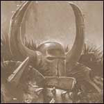

Forums galactiques > Assemblée Galactique : diplomatie officielle > Obscur, ou comment nait une haine éternelle et une
Pages : 1
| Ademor Respect diplomatique : 9  01/06 ETU 17:31 | Score : 9 Détails ____________________________________________________________
1. L’origine de mon aventure Je me nomme Ademor, surnommé Le Sombre par mon entourage. Je suis issu d’une famille qui a toujours vécue dans les Désolations Nordiques, proche de la Mer du Nord. Un jour que nous rentrions d’une expédition de chasse dans le Pays des Trolls avec quelques membres de notre village, nous vîmes au loin de grands nuages de fumée vers l’emplacement de notre village. Juste avant d’y arriver, mon père me cacha dans un renfoncement d’une caverne et me dit : « Ademor, reste ici et attends que quelqu’un du village vienne te chercher. Ne t’approche surtout pas de nos habitations. Tu es encore trop jeune, tu n’es pas préparé à e qu’il se passe là-bas. Si demain personne n’est venu, éloigne toi vers la Mer du Chaos. N’oublie jamais nos valeurs et le destin de notre peuple. Sois fier et digne de Tzeentch tout au long de ta vie ! » Et il partit en courant vers notre demeure, armes à la main, accompagné des membres de notre expédition. Tous criaient en s’éloignant d’un hurlement de rage. Je n’avais jamais vu ces hommes que je côtoyais pourtant tous les jours dans cet état de fureur. Après quelques minutes seulement d’attente interminable, je décidais de désobéir à mon père et de me rapprocher du village. J’entendis alors un fracas métallique accompagné de cris et de pleurs. Je m’approchais encore, doucement, me croyant caché dans l’obscurité de la forêt quand ce que je vis me terrifia … 2. La naissance d’une haine Un mercenaire impérial leva son arme et tout en implorant Sigmar, le décapita sous mes yeux. C’était l’un des derniers survivants de notre village. Je reconnus les vêtements que portait mon père avant de courir défendre nos habitations. Avant même que je puisse faire quoi que ce soit je me sentis agrippé vigoureusement par les épaules. Un mercenaire m’emmena auprès de l’homme qui venait de tuer mon père. Il se retourna, éclata de rire à gorge déployée et me lança ces propos : « Alors comme ça on laisse son peuple mourir sans le défendre ! Malgré ta jeunesse, ta lâcheté est déjà bien grande ! Néanmoins, je vais te laisser la vie sauve petit. Je sais que tu raconteras à ton peuple de cultistes sombres que Marxens Köenig et sa Confrérie des Mercenaires du Reikland viendra tuer un par un chaque habitant de ces terres chaotiques qui se trouvera sur notre chemin. L’héritage de Sigmar nettoiera ces Terres du Monde de votre présence. Tremblez peuple chaotique ! » Et je reçus un violent coup sur la tête. 3. Le début d’Obscur Malgré mon inconscience, j’ai un vague souvenir d’une étrange sensation. Un œil m’est vaguement apparu dans un nuage bleuté. Une voix se fit entendre avec un charme irrésistible. Malgré mon état d’inconscience, je me souviens pourtant nettement des paroles : « Ces Mercenaires du Reikland ne savent pas qu’ils viennent de provoquer leur perte. Jeune Ademor, ton destin est scellé ! Ce jour est le premier jour d’une nouvelle vie qui t’apportera gloire et immortalité ! Va, met toi en quête de compagnons et forme une compagnie guerrière digne de mon nom et venge toi jusqu’à ce que tous les impériaux soient devenus mes disciples … ou soient morts de ta main et de celles de tes troupes. Les victoires et la gloire seront vôtres ! » C’est ainsi qu’après m’être totalement remis de ce choc, je décidais de récupérer l’équipement dont j’avais besoin. J’offris une sépulture aux membres de mon village. Et devant la tombe de mon père, je fis le sermon de le venger : « Je jure pourchasser cette Confrérie des Mercenaires du Reikland, de contrecarrer tous leurs plans. Quoiqu’ils fassent, ils me trouveront au milieu de leur chemin ! Je n’aurais de repos tant que tous leurs crânes ne formeront pas un monticule au milieu de notre campement ! » C’est ainsi que je décidais de former une Compagnie Guerrière que je nommais Obscur, comme le dessein de Tzeentch. Ce terme représente aussi la noirceur de mon âme et ma soif de vengeance. C’est ainsi que plusieurs aventuriers se sont joints à moi tels Kalhos, Tanathos, Waldemar, … 4. L’alliance avec le Klan Kass’Kranes Quelques temps plus tard, tandis que nous parcourions le monde chaotique à la recherche de compagnons à recruter, je le vis enfin. Il avait réussi à me retrouver. Restant néanmoins sur mes gardes, je le vis s’approcher pacifiquement et me regarder étrangement. Il m’annonça m’avoir vu dans un de ses rêves, et que ce rêve lui avait ordonné de venir à ma rencontre pour négocier une alliance entre nos deux guildes. L’imbécile s’imaginait que je n’étais pas au courant, si seulement il savait d’où lui est venu ce rêve. C’est quand j’ai entendu parler de l’importance que prenait son Klan qui je lui ai envoyé ses images afin qu’il vienne à moi et croit qu’il est à l’origine de la proposition qu’il va me faire. J’ai besoin de ce klan de brutes irréfléchies pour empêcher les Nains de venir au secours des Impériaux lors de notre invasion imminente. A cause de ce maudit Pacte de Sigmar, ces deux civilisations se sont jurées assistance éternelle. Ainsi, je pourrai accomplir ma vengeance sans me soucier des petits hommes dans un premier temps. De plus, la Confrérie des Mercenaires du Reikland s’est alliée à l’Aube Eternelle, ennemis jurés de ce klan. Après avoir conclu cette alliance, nous nous séparâmes. De retour au campement, j’annonçais la nouvelle à mes compagnons qui saluèrent cette initiative difficilement, certains ne comprenant pas que cette alliance nous était nécessaire. « Notre cible prioritaire est l’Empire, nous l’oubliez pas ! Il sera toujours temps de nous occuper des autres races ensuite. » Des cris se firent ressentir, ils avaient compris le réel objectif de cette alliance. Quelques jours après, certains de mes guerriers et moi-même nous mirent en route pour le campement du Klan Kass’Kranes. J’avais écrit un parchemin que je souhaitais apporter aux membres de ce clan afin de nous présenter à eux. Cependant, je voulais voir par moi-même à quoi ressemblait réellement ce village de Peaux Vertes. Voici ce que disait ce parchemin : « Je vous salue Klan de Peaux Vertes. Je viens par cette missive me présenter à vous, compte tenu que ma Compagnie Guerrière et votre Klan sont désormais unis dans l'adversité contre l'Aube Eternelle et la Confrérie des Mercenaires du Reikland. C'est au cours de cette rencontre avec votre Big'Boss comme vous l'appelez, à savoir Krag Kroc'Nabots, que nous décidâmes d'unir nos forces contre les armes de l'Ordre. L'idée de Krag m'a séduite, et après avoir obtenu l'accord des membres les plus influent de ma Compagnie Guerrière, j'ai décidé d'apposer mon sang sur ce traité. Sachez donc alliés, que vous pourrez compter sur Obscur pour toute aide dont vous aurez besoin. Nous nous occuperons des forces impériales en priorité, mais nous serons toujours ravi de venir changer nos habitudes contre les Nains. Sachez aussi, que nos campements sont vôtres si vous le souhaitez. Par mon sang et pour la gloire de Tzeentch, que notre amitié soit longue et fructueuse aux forces de la Destruction ! » Lors de mon entrée dans leur village, je me sentis observé par ses habitants. Un malaise s’ensuivit. Ma vengeance passait donc par me rabaisser à m’allier avec ces créatures. Un gobelin qui sortait de sa hutte commença à se moquer de moi. Si seulement il savait ce que je pourrai faire de lui, il serait sûrement resté à l’intérieur. Un Peau Verte se rapprocha de moi en braillant dans un langage sincèrement particulier et me salua de manière encore plus étrange, se présentant sous le nom de Gorgutz. Décidément, c'était vraiment une alliance atypique que je venais de signer. Ces êtres sont vraiment d’un primitif rarement vu sur notre Monde. Enfin, tant que cela sert le dessein de Tzeentch, nous ferons avec. Un autre, d’une voix légèrement provocatrice menaça de ne pas toucher à ses Nains. Je me mis sur mes gardes, ces êtres étant imprévisibles, n’importe quoi pouvait se passer et la moindre provocation de part et d’autres pouvait tourner au carnage malgré les bonnes intentions du parchemin. Je pris donc la parole : « Bien le bonjour peuple de Peaux Vertes ! Je suis Ademor, créateur de la Compagnie Guerrière Obscur ! Je viens vous apporter cette missive, gage de notre amitié et symbole de notre respect envers vous. Mais comme un parchemin ne suffit pas forcément, j'ai décidé de vous l'apporter en main propre. Ou est donc votre Big'boss ? » Un gobelin avec un air niais me donna une vague direction sans s’attarder. Je le remerciai d’un signe de tête et me dirigeait vers le chef du klan. Tandis que Kalhos et un gobelin commençaient à se provoquer mutuellement, Krag Kroc’Nabots arriva en faisant le ménage parmi ses condisciples. Il les éloigna, réprimanda le petit gobelin et prit la parole pour expliquer l’origine de notre alliance : " Koutez moi Boyz !! j'vé vous dire pourkoi k'on doit aider lé zhoms du Chaos !!" "L'aut' jour, y a une voix ki m'a appellé de dedans ma tête, y s'passe jamais rien d'habitude dans ma tête alors j'ai cru ke cété kune saleté de snolts ki se fouttait de moi... j'en ai krasé un kété pas loin mé la voix continuait à m'appellé, alors j'en ai kor krasé d'ot, j'en ai krasé tellement ka la fin y avait un gros tas de snolts krabouillé dans le klan !! " "Cété bien marrant mé la voix, elle disparaissait pas, ça me rendait dingue alors j'me suis dit kelle était vraiment dans ma tête et ki fallait ke je la fasse sortir. Alors j'ai pris un kaillou, l'plus gros que j'ai trouvé et j'me suis mis un énorme koup d'avek, pis kor un aut' et kor un !! j'voyais plus rien, j'avais du sang d'vant mes yeux mé je kontinuais à taper pour faire sortir cet voix... ken soudain j'ai tendu "Krraaaak" j'me suis dit ke j'avais taper trop fort et ke j'avais kassé le kaillou, mé j'ai r'gardé et l'kaillou l'avait rien, pis j'me suis senti tout bizarr' kom ken kon boit la bière de champi, mé jambes elles voulaient plus me porter cé saletés, et j'me suis kroulé au sol...." "K'en j'me suis réveillé, y f'sait noir d'partout autour de moi, y avait plus rien d'ot' ke moi et du noir autour, juste au bout y avait deux petites lumières bleu, et kor une fois la voix kausa mé ce kou ci elle était plus dans ma tête mé elle v'nait dé lumières au loin ..." " Viens à moi Chef Orque !! " "J'ai sortit mon Kikoup et j'ai couru pour la krabouiller, en m'approchant lé deux lumières disparurent et un grand zhom en armure sombre s'approcha. Là j'ai essayé d'lui filé un grand kou d'boule mé j'lé karrément traverser et lui l'a disparu... derrière moi lé zyeux du zhoms redevinrent bleu et klairés de nouveaux l'obskurité." " C'est inutile orque, ici ta fureur est vaine... " "J'resté sur mes gardes, l'zhom y f'sait ke d'apparaitre et de disparaitre autour de moi et j'avais bo donné dés koup dans tout les sens, chak fois cé kom si j'tapais dans rien d'ot ke d'lo. Pis après la voix elle se remit à m'kauser :" " Tu rassembles les peaux vertes chef orque, tu espères les mener à un glorieux combat qui anéantira le royaume des Nains, tu espères combattre leur souverain et voir tomber leurs forteresses ... mais il n'en sera rien et les peaux vertes seront anéanti " " Mont' toi sale zhom !! lé nabots font pas l'poid face à nous, on lé krasera kom dé rats et le roi dé Nabots krèvera d'vant tout lé zot' Peaux Vertes !! Kom ça y sauront tous ke cé l' Klan Kass'Kranes ké le plusse balayz des klans !! " " Les Nains ont toujours été aidé par les hommes de l'Empire, les bâtards de Sigmar leur viendront en aide encore une fois et ils vous élimineront jusqu'au dernier... Je peux t'aider à empêcher les Humains de venir en aide aux Nains, rejoins nous !! sois notre allié et bientôt la renommée de ton klan s'étendra au delà des Montagnes du Bord du Monde !! les ennemis viendront de tout le vieux monde pour vous défier .... sois notre allié Chef orque !! " "Cé à ce moment là ke la voix disparu, le zhom disparu, les lumières disparurent et tout d'vint de plus en plus klair autour d'moi, j'voyais la fort'ress dé nabots Karaz a karak en feu, j'voyais not'klan ki torturait lé minabs d'la famille du roi, j'voyais Thorgrim à mes pieds et le zhom en armure sombre à koté d'moi.... une lumière m'aveugla et lorsk je rouvris les yeux, j'étais d'nouvo dans ma hutte et yavé un Kaillou brisé à mes pieds, mon krane me f'sait même plus mal et tout était klair dans ma tête, kom si j'savais exakt'ment ce ki m'resté à faire." Une fois son récit terminé, il m’attrapa la main et hurla leur cri de guerre, reprit en cœur par toute son armée. Je ne pus m’empêcher d’esquisser un sourire de satisfaction, tant tout se passait comme prévu. Thanatos prit la parole à son tour pour se présenter, ce qui eu pour réaction quelques provocations verbales. C’est le moment que choisit Waldemar pour planter son épée gigantesque dans le sol dans le but de saluer nos alliés ce qui ramena un peu le calme. Tout fonctionnait comme prévu. Tout un klan de Peaux Vertes allait nous aider à accomplir ma vengeance tout en croyant avoir eu l’initiative de cette alliance et être en position de force par rapport à nous. ____________________________________________________________ |
Pages : 1
Forums galactiques > Assemblée Galactique : diplomatie officielle > Obscur, ou comment nait une haine éternelle et une